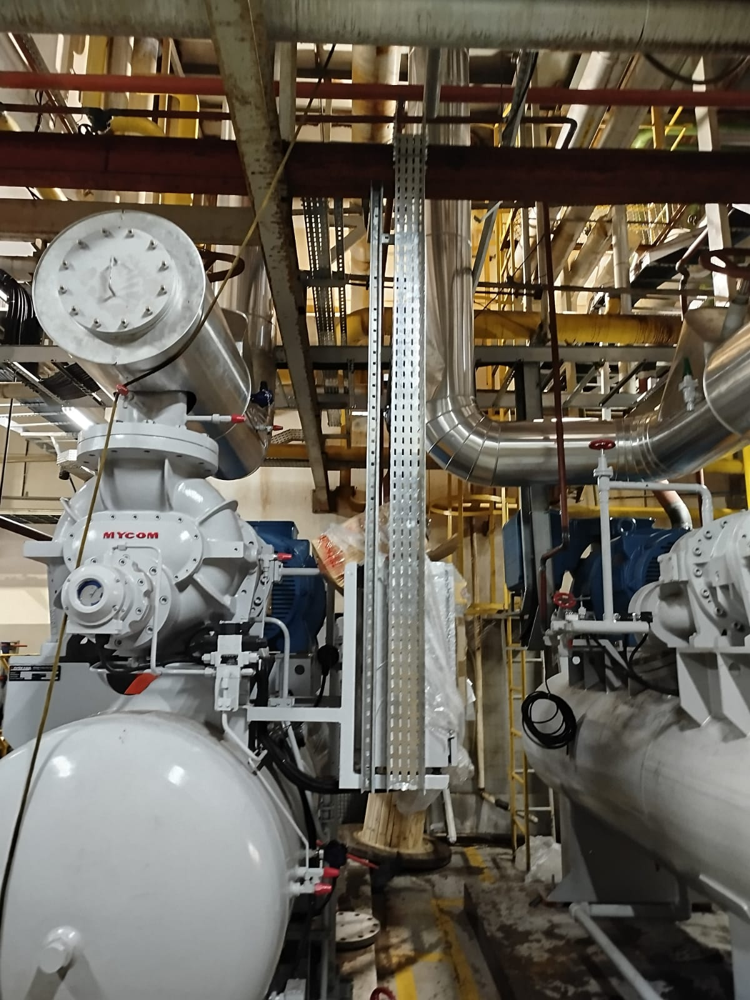
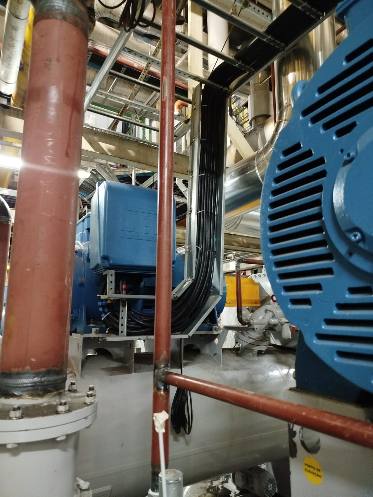
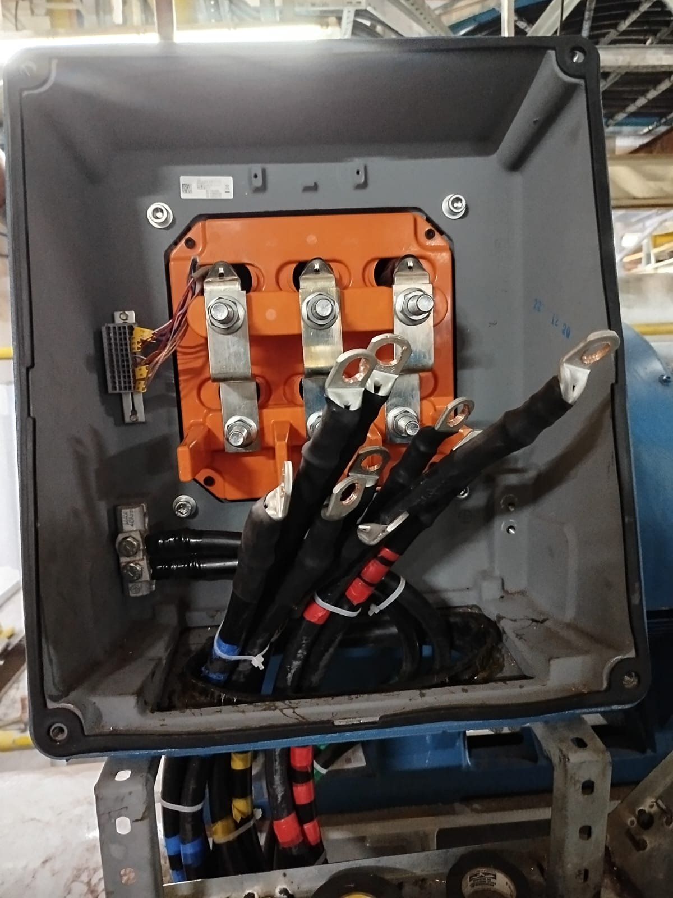

Com mais de uma década de experiência no mercado, somos especialistas em instalações elétricas e hidráulicas, oferecendo soluções eficientes e de alta qualidade. Atuamos com foco na segurança e na durabilidade das instalações, sempre respeitando as normas e regulamentos técnicos. Além disso, nossa equipe está constantemente atualizada com as últimas inovações e melhores práticas do setor.
Expandimos nosso portfólio ao longo dos anos, realizando projetos não apenas no setor de instalações, mas também em áreas como construção civil, indústria e energia. Trabalhamos de forma personalizada, atendendo às necessidades específicas de cada cliente e adaptando nossas soluções para garantir a máxima performance e economia. Nossa abordagem prática e inovadora garante a satisfação completa em cada entrega.
Acreditamos que o diferencial está na qualificação da nossa mão de obra. Contamos com uma equipe altamente capacitada e experiente, pronta para atender aos desafios mais complexos com eficiência e profissionalismo. Seja na instalação ou na manutenção, garantimos a execução impecável de cada projeto, com respeito aos prazos e orçamentos estabelecidos.



